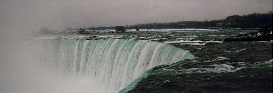
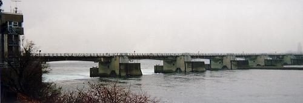

老後の趣味としてと言うわけではありませんが、将来何もすることがなくなってはつまらないと思い、点字初級者教室に通っていましたが、そこで親しくなった友人と旅行の話が盛り上がって、電車でのんびりと下呂温泉にでも行きたいねという話に…
それがどこでどうなったのか、一泊の温泉旅行が五泊六日のカナダ旅行になっちゃいました。
何かの本に載っていたツアーだったのですが、これが嘘のように激安もので、なんと七万円がちょっと切れるだけで、ナイアガラの滝とトロントへ行けちゃうのです！
「これは行かない手はないよね！」
と、早速例によって例のごとく主婦休暇願いをだんなに切り出してみると、
「そんなもの絶対にあたまの『１』を見逃しとる！」
と、頭からその金額を信じてもらえず、
「行けるものなら行ってみたらぁ？」
とばかりに、鼻先でふふんとあしらわれてしまい、腹の中では「このバカタレが…また何やら勘違いをしとる」とでも思っていたのでしょう。
申込書が送られてきて、振込用紙を見せても「何かあるに違いない」とまだ半信半疑の半兵衛さん。
なぜこんなに安いのかと言いますと、本当にナイアガラの滝を見てトロントへ行くというだけのものなんですが、実はこのトロントからオタワかどこか（忘れました）に行って、お城に泊まるというオプショナルがついていまして、これに参加しない人はトロントに捨てていきますので「勝手に遊んどってチョウ」という内容だったのです。
お城に泊まるのも魅力がありますが、自由行動の出来る海外というものの方がはるかに輝いて見え、夜はちょっと心配（誰もこんなおばさんをさらおうなんてしないと思いますが…）なので、その分夜のオプショナルにお金を使おうということになりました。
成田空港からの出発になっていたので、新幹線で行こうか？前日から夜行バスで行こうか？と相談していたのですが、名古屋空港から成田までの早朝便に空きがあれば、それも追加料金なしで利用できてしまうという特典がついており、これがまた 出発三日前になって席が取れたという連絡があり、ラッキー！！
２月の最後の日とあってまだまだ寒い時期でしたが、午前７時台の便に乗らねばならないとなるとまだ夜も明けやらぬ５時ごろ家を出て、運転手をさせた挙句にお小遣いまで貰ってしまっただんなとはしばしの別れ。
さあー自由の身を楽しんでくるぞぅ（＾ｗ＾* /~
成田を出発するのは１６時何分だったか…そんな時間まで何をして暇を潰していたのか？なんて、言うまでもなくつまらないだけなので省略いたしまして、いよいよカナダへ向けて飛び立ちました。
時差は１１時間、飛行時間は１２～３時間だったと思いますが、日付変更線を越えたのはこれまでにはこの時だけです。
フェリーで寝るのも音がうるさくてなかなか寝られませんが、飛行機で座ったまま寝ることに比べたらまだ横になれるだけましというものかもしれません。
出来ることならば足元に座り込んでシートの上にうつぶせて寝たいものですが、それも叶いませんのでうとうととしては目を覚ましの繰り返しで、寝不足状態のまま朝を迎えました。
夜・朝・昼と三度の食事を機内ですませ、さすがにここまで飛行時間が長いとなると、トイレのペーパータオルを捨てるゴミ箱も満杯となり、ティッシュなども底をついてきていたようでしたが、それも計算されていたかのようにカナダの空港に到着しまして、入国審査です。
「What is the purpose of your visit?」
色白のお兄さんがお尋ねになります。
ちょ、ちょっとぉ…なんで私に聞くのさぁ？
前の人も、その前の人もすんなり通したじゃない…
それなのに…こんなおばさんにいぢわるするんかい？
「What is the purpose of your visit?」
再度、質問されて
「さ、さいとしーいんぐ」
お兄さん、ふんふんと頷いて、ふたたびふたたびですよー（涙
「How long are you going to stay here?」
指折り数えて…（って、そこまでして数えるまでもなく頭ではわかっていたんですが、なんとなくそうしないと不安で…＾-＾；
「ふぁ、ふぁいぶでいず」
体中から冷や汗がドアー！！と吹き出しているかのように、もうドキドキのハラハラで答えると
「Good!」
にこっと笑って、お兄さんが親指を一本立てて見せますので、私もほっとしてやっと英語らしき返事ができたような。。。
「Thank you」
バスに乗り換えてホテルまで向かう途中から日が暮れ始め、おまけに雨まで降り出してきて、これから観光をするわけでもないので、雨が降ろうが槍が降ろうがそんなことはかまっちゃいませんが、眠くて 眠くて、窓の外の風景を見ていたいのに、睡魔がすぅーっと襲ってきてはずるずると眠りの世界に引き込まれそうになっては、はっ！と目を覚まし、遠くに見えるおもちゃのように色とりどりの家々を眺めながらも、またもや両方の瞼が仲良くなってきて…素直にどこまでもずるずると引きずり込まれていけばよさそうなものなのに、それが出来ない人なんですよね。（＾_＾;
持参した本を見ていると、滝の近くにあるレインボーブリッジを渡ればもうそこは「アメリカ」で、「国境」というものを歩いて超えてみたいものだと、橋を渡ることは出来るのかどうかとガイドさんに聞いてみたところ、
「なんにもないですよー」
と、肝心の行けるのか行けないのかの返事がどうであったのか覚えてないのですが、さりげなく言われた一言と、何よりも私たちが橋を渡らなかったということは確かで、いかに私たちが好奇心旺盛でも夜はやっぱり出歩かない方が賢明。
気になっていたことなので調べてみたところ、パスポートと橋の通行料として1,25C$（または1US$）を支払えば歩いても車でも簡単に渡れるのだそうで、一応観光目的の入国を明示するために航空券も携帯した方がよいというような事が書いてありました。
ナイアガラのホテルに到着して、それぞれの部屋割が済んで持ち物を運んでしまうと、まずは腹ごしらえということになりますが、このホテルでの食事は個人持ちということになっており、さてどうしましょう？
夜のナイアガラを見るのも今日しかできないからと、外に出てみようということになりましたが、Ａさんは傘を持って来ておらず、小さな折り畳み傘に肩を寄せ合ってホテルから飛び出しました。
ホテルの正面から出られる道路ではなく、駐車場を横切って裏に当たる道路に出てみると、その道路の向こう側が川になっているようで、滝が大きな音をたてて落ち込んでいるのが聞こえてきましたが、それが一体どこにあるのやら…真っ暗でその雄姿は一向に見えません。
ホテルやカジノが建ち並ぶ道路沿いに歩いて、渡ってみたかったレインボーブリッジのところまで行くと、やはり国境になっているだけあって、橋の手前に高速道路の料金所よりはもう少し立派な検問所があり、橋の下のトンネルのような所からも道路が繋がっており、そこからもアメリカ側に渡ることができるようでした。
橋がなだらかなアーチ状になっていたような気もしますが、雨と闇で橋の向こう側は何も見えませんでしたので、明日があるさとばかりに引き返し、今度は道路の反対側を歩いてみますと、往きは気がつきませんでしたが、川沿いが公園になっており、そこからライトアップされたみどり色の滝がふたつ…

写真↑は翌日滝の上から見たカナダ滝です。パノラマで写しても向こう端までは入りきりませんでした。（＾m＾；
単純なもので、見るべき物を見てしまえばおなかの虫が騒ぎ出すというのがかぼちゃのイイトコロ（？）。
「ファーストフードらしき店があったなぁ…」
「コンビ二も一軒あったなぁ…」
などと往きがけにチェックしていた食べ物にありつけそうな店を思い出しておりましたが、公園から眩しいほどに光り輝いているホテル街のある方へ渡ると、私たちの泊まるホテルが目の前にあり、なんとなく足はそちらへ向いて進んで行きます。（あのう、オメシちゃんはどうなったんでせうか…？）
ホテルのロビーに戻って、やっと食事をどうするか？という具体的な話が出てきまして、彼女はちゃんとしたレストランで食べたかったのかと思いきや、昨日の早朝からの移動でおなかが空いたという実感がないそうで、軽いもので済ませたいと言い、売店を探して行ってみると、ショーケースには思っていたより質素なものが並んでおり、Ａさんは何も入ってないパンだけを買い、私は中身の少なそうなサンドイッチと壜ビールを買って部屋に戻りました。
サンドイッチをつまみにビールとは…とほほ なんて感じで備え付けの冷蔵庫の所へ行くと、グラスは置いてありますが栓抜きがない！
「あれ？」「あれ？」
ごそごそと冷蔵庫の上にあるものをどかしてみたり、ドアを開けて探してみたりするが、ない！
「売店に行ってきた方が早いんじゃない？」
と言われて、ジュースくらいの小さな壜を買ってきたときの袋に入れて、部屋を出て エレベーターに乗り、
「あれ？栓抜きって英語で何と言うんだったかな？」
考えている間にエレベーターは一階に着いてしまい、ドアが開いて…
「オープン」という言葉が出てきた。
ドキドキしながら売店の前に行き、持ってきたビールを見せて、
「プリーズ オープナー」
と言うと、売店の女の子も店の前のテーブルでお酒を飲んでいたお客さんも、いっせいに私の方を見て、気のせいか一瞬固まったような…
オープナーではいけなかったのか？と、周りの反応を見ながら、おろおろしていると、店の女の子が笑いながら何かを言い、ビール瓶を片手に持つと、もう一方の手にタオルを持って…
どひゃあ!! なんてこと…
キャップをくるりと回して、プシュッ!!
もう笑うしかないでしょ？
なぁーんだ、そんなことだったのか…と、両手でキャップをねじる真似をして、うっはっはっは！…とやったら、そこにいた人たちも大爆笑。
「バイ バーイ！」
と、何人かの人たちに明るく見送られてエレベーターに乗り、それからひとりで笑えて 笑えて…途中の階で人が乗ってきたら「アヤシイ人」だと思われそうでしたが、幸いにも部屋のある階まで誰も乗ってくることがなく、廊下をひとり歩く間もくっくっくっ…と笑いを抑えきれずに急ぎ足で戻っていきました。
部屋へ入るが早いか、ぶっひゃっひゃ!! と笑いをぶちまけた私にＡさんもびっくりしてましたが、何があったのか話して聞かせると彼女も腹を抱えて笑いだし、私はというと、飛行機の中で貰ったピーナッツがあったことを思い出し、グラスに注いだら一杯半くらいで終わってしまう可愛らしいビールを飲みながら、ピーナッツをぽりぽり…
翌日の朝食はＡさんがレトルトのお粥を持って来ており、それをポットで暖めてご相伴に預かり、いたって質素なナイアガラ泊まりとなりました。
滝はアメリカ側にあるアメリカ滝とカナダ側にあるカナダ滝があり、二つの滝はすぐ近くにあります。
この時期のナイアガラは凍っているそうで、それも一見の価値ありと思っていたのですが、エルニーニョ現象の影響でその年は暖かかったので、どこからどう見ても凍っている箇所などというものは見られず、ちょっと残念でした。
三月の半ば頃になりますと「霧の乙女号」という遊覧船に乗って滝を下から見上げることも出来ますが、乗ってきた人の話では、乗船時にビニールのカッパを貸してもらえるそうですが、滝の水しぶきが土砂降り雨のように降りかかってくるので、カッパなしではびしょぬれになること間違いなしだそうです。
アメリカ滝の方は正面から見ることはなかったのですが、さすがに「瀑布」と言うだけあるとその大きさには圧倒されましたが、冬場はまだ水量が少ないそうで、山々の雪解けが始まるともっと豪快になると聞いてたまげました。
とにかく大きな滝で、見る方向によって七色の虹があちこちで見られ、バスは滝の正面をぐるりと回って、滝の上へと向かいます。
滝の上は公園になっており、私たちが日本を出発した頃は降っていたという雪が、昨日の雨にも負けずそこここに集められて小山を作っていました。
駐車場に到着したバスの中から、公園のはずれにある低い石の柵の向こうに幅の広い川のようなものが見えており、バスを降りたら真っ先に見に行きたいところですが、まずはガイドさんの案内に従って左手奥にある建物へ向かって歩き、そこからエレベーターに乗りました。
数字のことは聞いたその場から忘れてしまうという特技の持ち主である私は、とにかく かなり下まで降りていくのだと聞いたということくらいしか覚えがないのですが、その割にはエレベーターに乗ってドアが閉まったと思う間もなく、あっという間に下に着いてしまい、
「なんだ…たいした高さじゃないじゃん」
と思っていたのですが、ちょいと調べてみましたら、アメリカ滝は高さ５６ｍ・幅３２０ｍでその水量毎分１千４百万リットル、カナダ滝は高さ５４ｍ…約１８階建てのビルの高さに相当し、高さ的にはアメリカさんに少々負けておりますが、なんと幅６７５ｍ・水量は毎分１億５千５百万リットルって、想像できます？
うちの水道使用量なんてその霧でまかなっちゃえます。（＾-＾；
エレベーターのドアが開くなり、
わっ！ わっ！ わっ！
耳をつんざくほどの大音響になったかと思うと、地下道にいきなりぽっかりと四角くくり抜かれたガラスも何も入ってない窓が現れ、目の前に滝の水がしぶきを上げてどう どうと落ちてきているのが見え、今 自分はナイアガラの滝つぼを目の前に見ているのだ…と、長い間写真やテレビでしか見たことのなかったこの滝の、恐ろしいほどの落水の音…水煙にぼやけて青空さえもかき消されたこの風景…
まだ地下道は先へ進めるようになっており、地鳴りのような振動を身体に感じながらもう少し進むと、コンクリートの壁がなくなり水のカーテンが現れ、５～６歩進めば滝の裏側に立てるのですがビジョ（美女？）ビジョになりそうなので、ぎりぎりのところで踏みとどまって眺めてきましたが、これが凍っていたらどんなだったのだろう？などと考えながらも、私の感動は絶好調に達し、それを言い表すだけの言葉は未だにみつかりません。
アメリカ滝とカナダ滝を二分しているゴート島というのが滝の上にあるのですが、このゴート島にも「風の洞窟」というものがあり、カッパや足カバーを借りてアメリカ滝の下に行くことができるそうです。
興奮冷めやらぬままに地上に戻り、気になっていた公園の柵のところへ行ってみますと、柵の高さは私（１５０ｃｍくらい）のわきの下くらいで、下半分は石の台のようになっており、上半分が鉄の柵になっているので、石の上に乗れば私でも軽々と乗り越えられそうです。
水面は思ったより近く、川底の様子が肉眼で遠くまで見えるので、そこに滝がなかったら歩いてでも渡れそうな気がするくらいでした。
なんと言っても世界三大瀑布のひとつといわれているくらいですから、川の幅も半端じゃなく、その浅そうな川が延々と遠くまで続いており、ところどころに盛り上がって木が生えていたりもしますが、はるか彼方にゴート島らしきものが見え、その向こうにはアメリカ滝の分の川が広がっているはずです。
そんなに大量の水が一体どこから流れてくるのかと言いますと、五大湖のエリー湖から流れてきて、滝を経てナイアガラ川へ注ぎ、これから私たちが向かおうとしているトロントにも隣接しているオンタリオ湖まで流れていきます。

雪解けで水量の多い時期には滝の上流で水力発電もされているそうで、この時は水門が開いておりました。
ビデオシアターのようなところへ行って、大画面で滝の歴史や四季折々の風景を見てきましたが、ナイアガラでは昔から滝下りをする人が絶えないそうで、ボートに乗ったり樽の中に入ったりその他様ざまなかたちで滝の上から落ちて、命をなくした人も多いそうですが、無事に滝下りをした人もあるそうで、確か去年もどこかの人が成功したと新聞か何かで見ました。
他にも、滝の上を綱渡りで渡ろうとした人もいたようで、これも何年か前に、高層ビルでの綱渡りに成功した人が、挑んだというのをテレビで見ていたはずなのですが、途中でテレビの前を離れてしまったのか、成功したのかどうかは知りません。
滝は一年に３cmづつ削れて行くそうで、昔滝があったところという場所でバスから降りて見学をしたのですが、滝からそのまま川を下って行ったわけではないので、そこまでどのくらいの距離があったのかはわかりませんが、かなり離れていたと思います。
３cmですよ。。。１００年かかっても３メートルしか後退しないんですよ（＾v＾；
バスで川沿いに走っただけでも、どう少なく見積もっても１０分は走っていたと思うのですが、うぅーむ、最初に滝を発見したのは何十万年前なんだろう…？ （＾。＾；
カナダの国旗にも使われている砂糖楓の林を眺め、どこかの学校の花時計を車窓見学でやりすごし、途中トイレ休憩も兼ねて立ち寄ったみやげ物店に鹿の革製品が沢山置いてあり、いろいろ見ていると、二つ折りの財布なんですが小銭入れの部分がふたつに分かれており、仕切りが透明になっているものがあったのでいくつか買ってきました。
さて、いよいよトロントに到着です。
トロントはカナダ最大の国際都市で、オンタリオ州の州都です。
古くから毛皮の交易所として栄えたカナダ経済の中心地で、ナイアガラ観光に訪れる観光客の基点にもなっているようです。
夕食はホテルのレストランでしたが、この時近くに座っていたおじいちゃんと話していると、なんと７４歳のお年で一人旅だといいます。
以前は奥さんとお二人で海外旅行を楽しまれておられたようですが、近年奥さんに先立たれ、お年がお年なので一人での旅行参加はどこでも断られてしまうそうで、今回の旅行も娘さんと同行される予定だったのが、都合で娘さんが来れなくなり一人旅となったということでした。
一人っきりで部屋に居るのは寂しいとおっしゃるので、食事を終えてからお部屋に遊びに行き、コーヒーをご馳走になりながら、巡り歩いた旅先の話などをあれこれと聞かせていただきました。
このおじいちゃんは旅行会社の上得意さんなのだそうで、激安旅行の案内などもいち早く届くらしく、驚くような料金であちこちへ行っているとのことでした。
 続きを見る
続きを見る